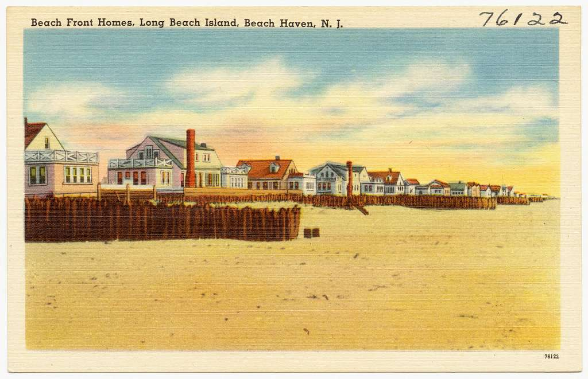
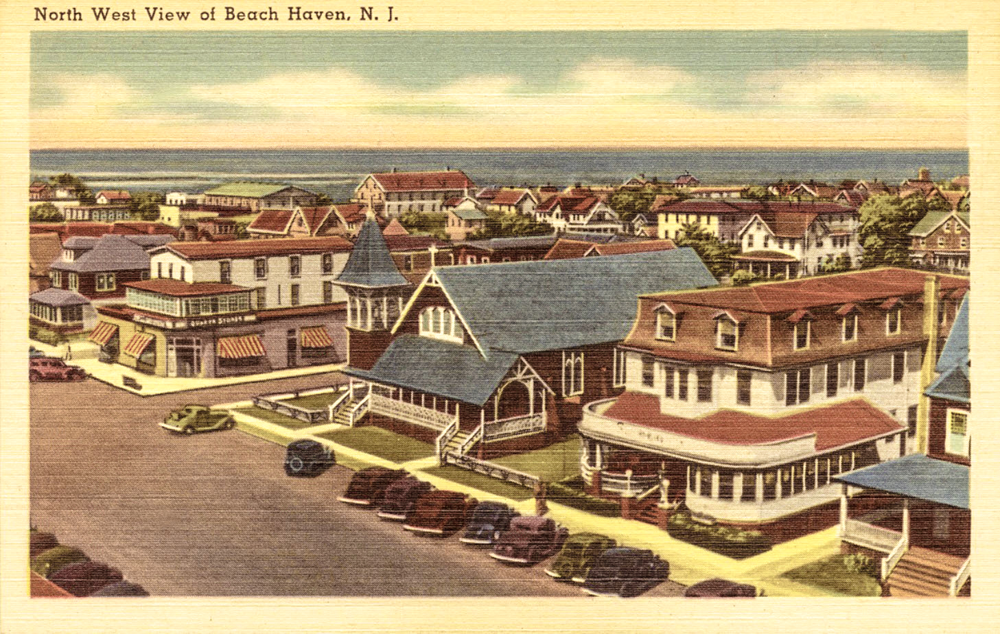
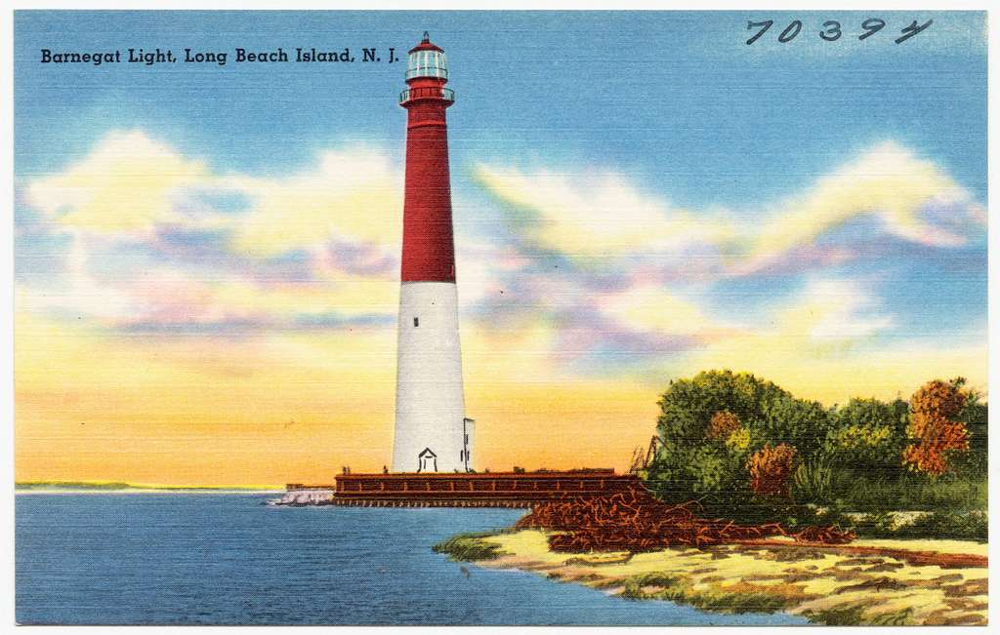
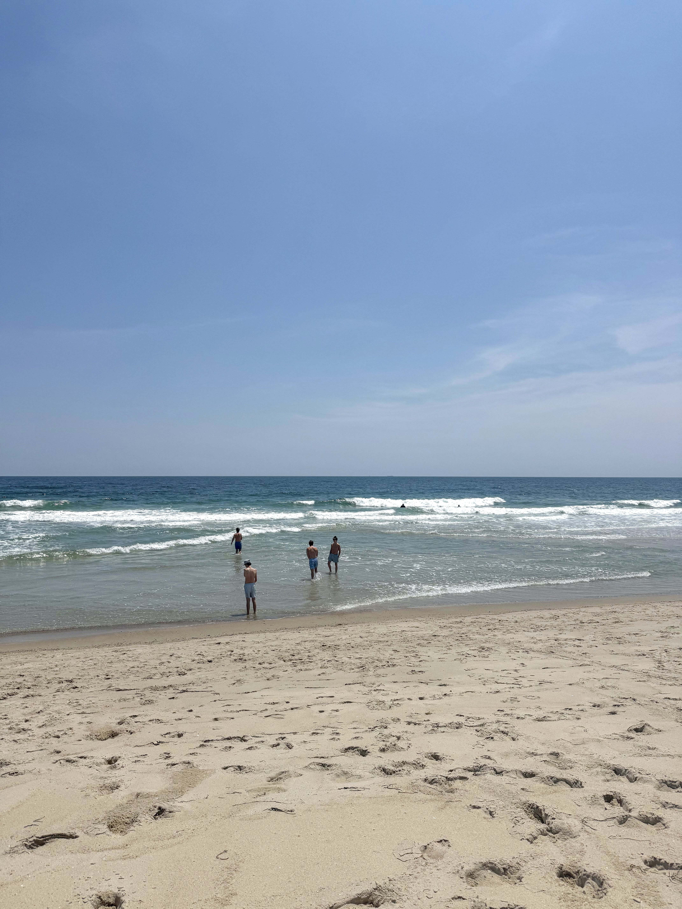

History of LBI



Long Beach Island has a rich history dating back to the early 1600s. The Lenape people were the original inhabitants of the island, using it for fishing and clamming due to its abundant natural resources. In the 1690s, more hunters and Europeans began to settle, and Barnegat Inlet, on the north of the island, was a key feature in allowing freight shipments and whaling to arrive from the 17th to the 20th century. The current Barnegat Lighthouse was completed in 1895 and was built by the United States Army Corps of Engineers. The United States Life-Saving Service built a station at Barnegat Light, which still operates today as a United States Coast Guard station.
For a brief period, a train track ran from the Barnegat Bay to Beach Haven, but after severe winter storms in 1920 and 1923, damage caused the railroad to end service, and tourism diminished greatly. After the Ash Wednesday Storm of 1962 destroyed the low-level two-lane bridge that was established for getting onto the island, the current Route 72 Causeway was built in the late 1960s.
A significant storm affected the island again in 2012, when Hurricane Sandy hit. A large portion of residents were evacuated, the ocean connected to the bay in some spots, and streets were covered with up to 4 feet of sand. It was reported that the storm surge reached 9 feet tall, and 18-foot swells severely damaged a significant number of the oceanfront homes. The island was closed for 13 days following the storm, and the damage was severe. The storm led to the development of the dune system, a project initiated by the U.S. Army Corps of Engineers, which requires sand dredging to create large dunes, establishing an elevated barrier between the beach and the oceanfront homes. The project was incredibly divisive, with some homeowners complaining it devalued their homes. Because of this divisiveness, the project was not implemented across the whole island, but remains in place on some beaches.
The island has not contained a boardwalk since 1944, and mainly attracts family-oriented crowds looking for a quieter beach environment with simple activities. Being a barrier island, LBI is at great risk from sea level rise, and could experience major flooding if scientists' predictions are correct. The Army Corps of Engineers began work on a $75 million project to combat erosion in 2005, which resulted in the dune project mentioned above. Once again, this replenishment is an extremely controversial topic, with some visitors complaining about how it takes away from their property value while others agree it's necessary to protect the island. The Manahawkin Bridge recently underwent a $155 million renovation ending in 2016 that opened a southern span of the bridge, with the original being built over by 2019. One road runs the length of LBI, called County Route 607. Since the island is so narrow, sometimes only 4 or 5 houses lie on either side of this road at any time.
